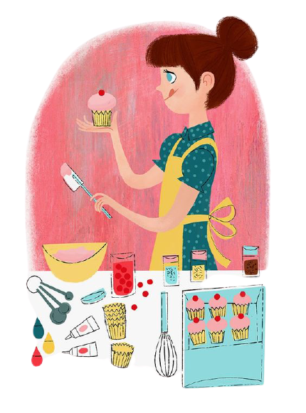

Vanilla Cupcakes
- INGREDIENTS
- 2 1/2 cups (325g) all purpose flour
- 2 cups (414g) sugar
- 3 tsp baking powder
- 1 tsp salt
- 1 cup (240ml) milk
- 1/2 cup (120ml) vegetable oil
- 1 tbsp vanilla extract
- 2 large eggs
- 1 cup (240ml) water
- VANILLA FROSTING
- 1/2 cup (112g) salted butter, room temperature
- 1/2 cup (95g) shortening
- 4 cups (460g) powdered sugar
- 1 1/2 tsp vanilla extract
- 2–3 tbsp (30-45ml) water or milk
- INSTRUCTIONS
- Preheat oven to 350°F (176°C) and prepare a cupcake pan with liners.
- Add the flour, sugar, baking powder and salt to a large mixer bowl and combine. Set aside.
- Add the milk, vegetable oil, vanilla extract and eggs to a medium sized bowl and combine.
- Add the wet ingredients to the dry ingredients and beat until well combined.
- Slowly add the water to the batter and mix on low speed until well combined. Scrape down the sides of the bowl as needed to make sure everything is well combined. Please note that the batter will be very thin.
- Fill the cupcake liners about half way and bake for 15-17 minutes, or until a toothpick comes out with a few moist crumbs.
- Remove the cupcakes from oven and allow to cool for 2 minutes, then remove to a cooling rack to finish cooling
- To make the frosting, combine the butter and shortening in a large mixer bowl and mix until smooth.
- Add 2 cups of powdered sugar and mix until smooth.
- Add the vanilla extract and 1 tablespoon of water or milk and mix until smooth.
- Add remaining powdered sugar and mix until smooth.
- Add remaining water or milk as needed and mix until smooth.
- Pipe the frosting onto the cupcakes.
|
 |